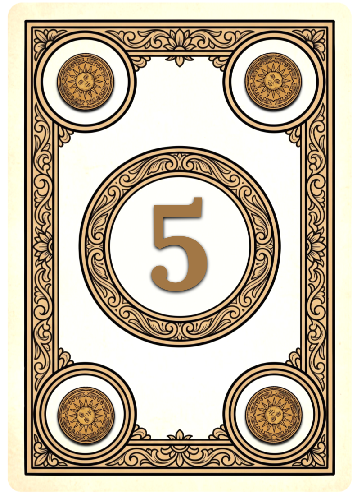
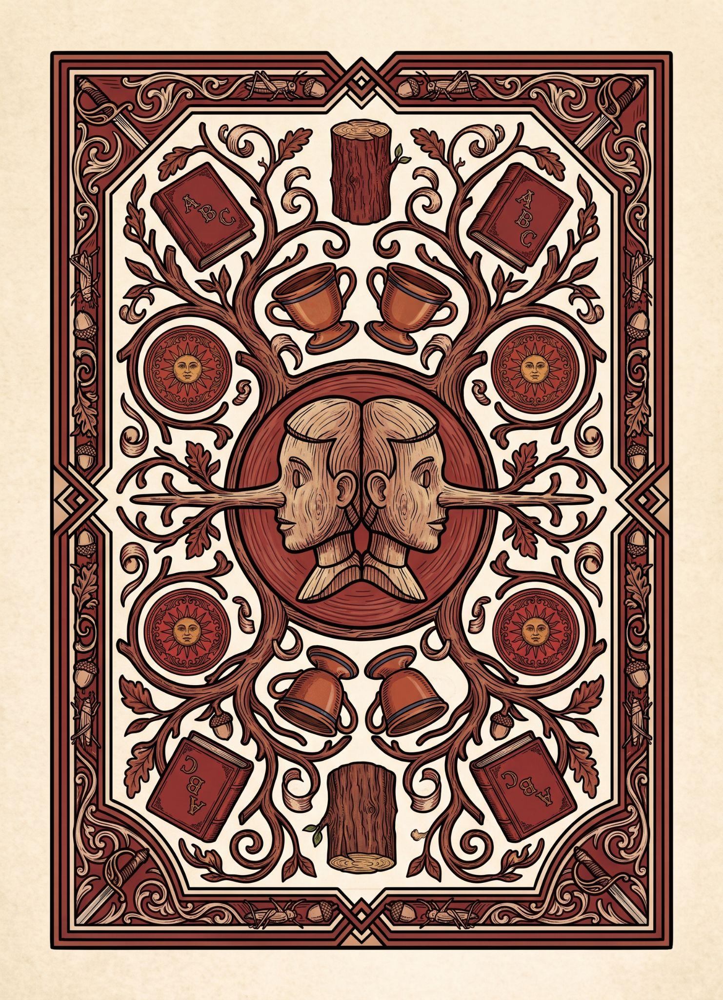
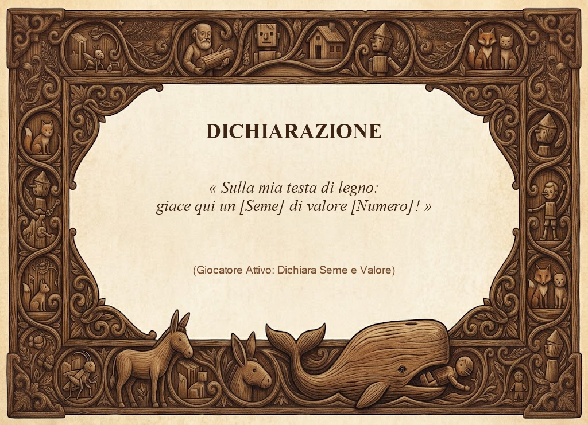
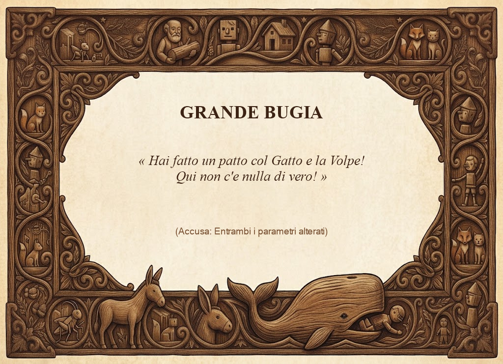
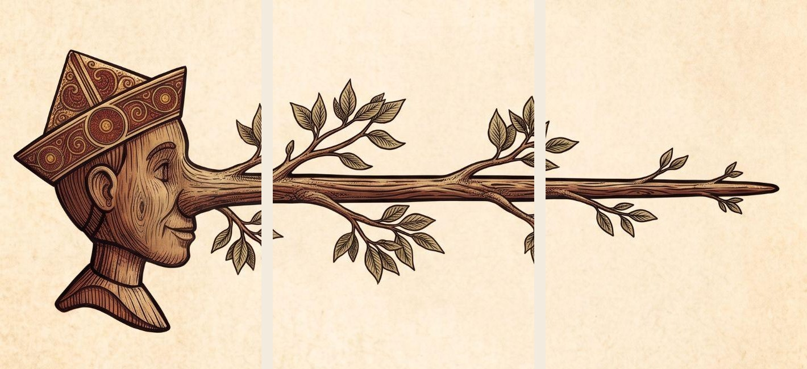

Un gioco di bluff, deduzione e nasi lunghi ideato da Federico Latini
👥 2–6 Giocatori
⏳ ~20 Minuti
🎯 Età: 10+
📦 78 Carte Complessive
🌟 6 Carte Personaggio
Capitolo 1
Scopo del Gioco
In questo gioco tutti i giocatori vestono i panni di Pinocchio: ad ogni turno si è costretti a mentire, scegliendo se pronunciare una Piccola Bugia (alterando solo il seme o solo il valore) o una Grande Bugia (stravolgendo entrambi i parametri).
L'obiettivo è farla franca ed evitare di essere scoperti dagli avversari: al termine della partita, chi sarà riuscito a mantenere il naso più corto otterrà la vittoria!
🏆 Condizione di Vittoria
La partita termina nell'istante esatto in cui la Riserva Comune dei Nasi (18 carte) si esaurisce del tutto, oppure se un giocatore raggiunge la lunghezza critica di 4 segmenti naso. Il giocatore che possiede il minor numero di segmenti naso tra la propria Testa e la Punta vince la partita. In caso di parità, la vittoria è condivisa.
Capitolo 2
Componenti di Gioco (78 Carte Fisiche)
Ogni carta è composta da un fronte e dal rispettivo dorso coordinato:
A. Mazzo Avventura (18 Carte)
Il mazzo centrale di gioco contiene 16 carte standard (valori da 1 a 4 per 4 semi tematici) e 2 carte Jolly speciali:
🪙 ZECCHINO
Valori 1–4 Oro zecchino del Campo dei Miracoli
☕ TAZZINA
Valori 1–4 Osteria del Gambero Rosso
🪵 CIOCCO
Valori 1–4 Il legno parlante di Mastro Ciliegia
🗡️ SCIABOLA
Valori 1–4 L'arma dei gendarmi e dei burattini
🃏 Le 2 Carte Jolly Speciali
• Jolly Seme: Il seme dichiarato è considerato sempre vero; il valore dichiarato è considerato errato.
• Jolly Numero: Il valore dichiarato è considerato sempre vero; il seme dichiarato è considerato errato.
👉 Entrambi risolvono sempre come Piccola Bugia!
🔍 Anatomia della Carta Tipo & Dorso Ufficiale

Fronte Carta: Valore cubitale al centro (1–4), semi sui 4 angoli per lettura universale a 360°.

Dorso Ufficiale: Due Pinocchi speculari, nasi ramificati e semi intrecciati nella selva.
B. Carte Setup del Giocatore (36 Carte)
Ogni giocatore riceve una dotazione iniziale di 6 carte:
👤 6 Carte Testa di Pinocchio: Estremità sinistra del burattino.
👃 6 Carte Punta del Naso: Estremità destra del burattino.
📜 6 Carte di Riepilogo: Schema sintetico delle regole di dichiarazione e accusa.
🗣️ 6 Carte Dichiarazione: Formula d'apertura per la menzogna di turno.
🤏 6 Carte Piccola Bugia: Carta accusa per 1 parametro alterato.
🤥 6 Carte Grande Bugia: Carta accusa per entrambi i parametri alterati.

Carta Dichiarazione «Sulla mia testa di legno: giace qui un...»
Piccola Bugia «Le tue bugie han le gambe corte!»

Grande Bugia «Hai fatto un patto col Gatto e la Volpe!»
C. Carte Naso Intermedio (18 Carte)
I segmenti di legno intagliato con foglie che si inseriscono tra la Testa e la Punta per far crescere fisicamente il burattino sul tavolo. Costituiscono la riserva comune (fissa a 18 carte).
D. Carte Personaggio dell'Avventura (6 Carte)
6 carte speciali con illustrazioni storiche che introducono modificatori ed eventi dinamici durante la partita.
I Personaggi introducono svolte imprevedibili al tavolo. In fase di setup vengono mescolati a formare un mazzetto coperto a terra.
⚡ Innesco di Attivazione
Durante la partita, appena una Grande Bugia viene indovinata dall'accusatore di turno, si pesca e si rivela immediatamente la prima carta del mazzetto Personaggi! Se c'era già un personaggio permanente attivo, viene scartato e sostituito dal nuovo arrivato.
Permanente
✍️ Collodi
Finché è in gioco, ogni giocatore deve annunciare la propria frase storica (la citazione stampata sulla carta) prima di dichiarare numero e seme, e prima di dichiarare se l'avversario ha detto una Grande o Piccola Bugia!
Istantaneo
🧚 Fatina
Effetto immediato appena arriva in gioco: la magia soccorre chi è più nei guai! I giocatori che hanno più carte naso (anche in caso di parità al comando) ne scartano una, rimettendola nella riserva comune.
Permanente
⚖️ Giudice
Finché è in gioco, non decide un solo accusatore: tutti i giocatori al tavolo (tranne il dichiarante) votano segretamente Grande Bugia o Piccola Bugia. La maggioranza è la risposta ufficiale; in caso di pareggio, il voto del giocatore a sinistra del dichiarante fa da spareggio.
Permanente
🎭 Mangiafuoco
Finché è in gioco, il burattinaio inverte il giro della giustizia: ti giudica il giocatore alla DESTRA del giocatore di turno, invece che quello alla sinistra!
Permanente
🎪 Lucignolo
Finché è in gioco, nel Paese dei Balocchi non ci sono turni d'accusa prestabiliti: il primo giocatore al tavolo che grida/vota Grande o Piccola Bugia diventa il giudice di turno! Se indovina, scarta 2 carte naso dal proprio indicatore; se sbaglia, ne prende 1 dalla riserva.
Istantaneo
🦗 Grillo
Effetto immediato appena arriva in gioco: la voce della coscienza prende il sopravvento! Il prossimo giocatore di turno ha la facoltà di DIRE LA VERITÀ (dichiarare esattamente la carta che gioca). Il suo giudice di turno dichiara se ha detto la Verità o la Bugia!
Capitolo 4
Preparazione (Setup 2–6 Giocatori)
Dotazione: Ogni giocatore riceve 1 Testa, 1 Punta, 1 Riepilogo, 1 Dichiarazione, 1 Piccola Bugia, 1 Grande Bugia (6 carte a testa).
Indicatore Iniziale: Ciascun giocatore compone il proprio indicatore allineando: [ TESTA ] ➡️ [ PUNTA ](Naso a lunghezza zero).
Riserva Nasi Comune: Disponi tutte le 18 Carte Naso Intermedio al centro del tavolo. La riserva è fissa a 18 carte a prescindere dal numero di giocatori!
Mazzetto Personaggi: Mescola le 6 carte Personaggio e posizionale coperte accanto ai Nasi.
Mazzo Avventura: Mescola le 18 carte Avventura e ponile coperte al centro.
Carta Base di Partenza: Rivela la prima carta Avventura e collocala scoperta a terra. Se è un Jolly, rimescolalo ed estrai una carta standard.
Primo Giocatore: Chi è più vicino al proprio compleanno comincia. Si gioca in senso orario.
🧮 Calcolatore Interattivo di Tavolo
Seleziona il numero di giocatori per visualizzare la configurazione:
Per 4 Giocatori: Riserva comune fissa di 18 Carte Naso al centro • 6 Carte Personaggio coperte nel mazzetto • 6 Carte Setup per ciascun giocatore (24 carte distribuite). Nessuna carta rimossa dalla scatola!
🪵 Il Meccanismo dell'Indicatore Fisico al Tavolo
Quando vieni smascherato da un'accusa esatta, separa la testa e la punta e inserisci le carte naso in continuità:

Capitolo 5
Il Flusso del Turno
1
Pesca e Gioca
Peschi 1 carta dal Mazzo Avventura e la metti coperta sul tavolo davanti a te, senza mostrarla ad alcuno.
2
Menti (La Dichiarazione)
Dichiari ad alta voce seme e valore (1–4). Rispetto alla carta base scoperta a terra:
Valore più basso: È ammesso SOLO se mantieni lo stesso seme della carta a terra.
Valore più alto: Può essere di un qualsiasi seme (uguale o diverso).
Bluff del Jolly: Non sei limitato ai numeri reali (1–4). Puoi dichiarare valori impossibili (es. Ciocco 7) simulando di possedere un Jolly!
🚨 PENALITÀ IMMEDIATA DI 3 CARTE NASO
È severamente vietato dire la verità (salvo per effetto della carta Grillo) oppure compiere una dichiarazione incongrua (es. annunciare un valore più basso cambiando seme). In questi casi il giocatore di turno prende subito 3 carte Naso dalla riserva comune!
3
L'Accusa
Il giocatore alla tua sinistra (o secondo modificatore di Mangiafuoco / Giudice / Lucignolo) cala la sua accusa:
🤏 Piccola Bugia: Sostiene che hai cambiato solo una cosa (solo il seme oppure solo il valore).
🤥 Grande Bugia: Sostiene che hai cambiato tutto (sia il seme sia il valore).
4
Rivelazione & Risoluzione
Gira la carta giocata a faccia in su:
❌ Se l'Accusatore SBAGLIA: Non succede nulla. L'hai passata liscia e nessun naso cresce!
✔️ Se l'Accusatore INDOVINA: Prendi dal mazzo comune 1 carta naso (se era Piccola Bugia) oppure 2 carte naso (se era Grande Bugia) e inseriscile nel tuo indicatore.
🌟 ATTIVAZIONE PERSONAGGIO: Se è stata indovinata una Grande Bugia, si gira immediatamente una nuova carta dal mazzetto Personaggi!
🔁 Nuovo Turno & Mazzo Esaurito
La carta rivelata diventa la nuova base per il turno successivo (se è un Jolly, si rimescola l'intero mazzo di gioco e si scopre una nuova base standard). Se il mazzo di pesca si esaurisce prima che la riserva dei nasi sia finita, rimescola tutti gli scarti eccetto la carta base attuale.
Capitolo 6
Regole Speciali per i Jolly
Quando riveli un Jolly, la verifica dell'accusa segue due regole deduttive speciali:
🃏 Jolly Seme
Il seme dichiarato è considerato corretto; il valore dichiarato è considerato errato.
👉 Risolve SEMPRE come Piccola Bugia.
🃏 Jolly Numero
Il valore dichiarato è considerato corretto; il seme dichiarato è considerato errato.
👉 Risolve SEMPRE come Piccola Bugia.
Capitolo 7
FAQ & Casi Particolari
❓ Cosa accade se per sbaglio dico la verità sulla mia carta?
Nel gioco di Pinocchio la sincerità è punita! Dichiarare esattamente la carta pescata (salvo quando è attivo l'effetto del Grillo) comporta l'assegnazione immediata di 3 carte Naso dalla riserva comune.
❓ Cosa accade se faccio una dichiarazione formalmente invalida?
Se dichiari un valore più basso cambiando seme rispetto alla carta base, la mossa è nulla ed è considerata una violazione: prendi all'istante 3 carte Naso e la carta viene scartata.
❓ Quando viene rivelato un nuovo Personaggio?
Un nuovo Personaggio viene pescato e rivelato ogni volta che una Grande Bugia viene indovinata con successo. Se il personaggio rivelato ha un effetto permanente, sostituisce quello attualmente attivo al centro del tavolo.
❓ Con Lucignolo in gioco, se nessuno vuole rischiare ad accusare?
L'accusa con Lucignolo è libera e opzionale: se nessun giocatore decide di scattare e accusare, il giocatore di turno la passa liscia e il gioco prosegue normalmente.